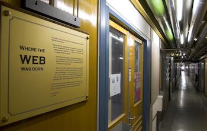
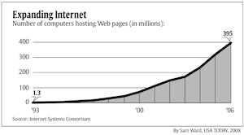
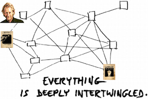

The Origins of the Web
Intrduction
The internet saw a surge of popularity on the Western world during the 1990's, and thanks in no small part to the development of the World Wide Web at CERN (Segal, B., 1995). CERN (European Organisation for Nuclear Research, or “Conseil Européen pour la Recherche Nucléaire”) is one of the largest particle physics laboratories in the world, home to the large hadron collider, and the birthplace of the World Wide Web.
Not unexpectedly, the scientists at CERN were not the first to try and develop an integrated form of communication that in the 21st century is called internet, as computing pioneer Vannevar Bush, who first defined the Web's fundamental principal, hyperlinked pages, in 1945 (Kelly, K., 2005); but CERN was the first organisation to develop an intricate system for data communication, almost half a century later.
Before That
Segal (1995), who was the first TCP/IP (as Internet protocols were then called) Coordinator at CERN, also states that the situation of data communication inthe early 1970's was chaotic, much like the main projects at the laboratory. Several companies vied for the possibility of defining national or even international standards. Needless to mention, this made real progress more complicated since there were too many different methods and techniques
Though the Web was officially accepted around the years of 1993 and 1994, it had been originally prototyped on 1991, and even before the Web itself, the professionals at CERN were vehemently prohibited to have any external connections using TCP/IP, (Segal, B., 1995). Internet as is known today would only be available to the public for at least 10 more years of developing.
On the Deacdes After
The Web had a quiet start on Christmas Day on the 1990's (McPherson, S.S., 2009), though it became popular very quickly. Surely one of the most fantastic innovations of science at the 20th century. The Web creator Tim Berners-Lee (McPherson, S.S., 2009), compared the rapid growth of machines utilising his creation to a bobsled, as it increased steadily, but once it started, its figures sky-rocketed. The graph below shows how, in 13 years, from 1993 to 2006, the number of users increased at an impressive rate of almost 400 times; and, as is common knowledge in the second decade of the 21st century, it would only grow more.
Within the next decade, computers would become smaller, more powerful, and cheaper (McPherson, S.S., 2009), as some of the greatest minds of the 20th century worked on them. The development of the Web and more advanced software programs was of paramount importance, even if, at the time, they did not know yet exactly how it would all turn out.
Timothy Berners-Lee
The man responsible for developing the World Wide Web, the British computer scientist Timothy Berners-Lee. Since a young age, Tim's life was overshadowed by computers and programming, being the son of two respected members of the field.
In 1976, Berners-Lee graduated from Oxford University with a degree in physics (McPherson, S.S., 2009), and inspired by his parents and by the “fun” he had had in building his own computer in college, he began to interview for jobs in that area, eventually coming to work as a software engineer at Plessey Telecommunications. Acquiring the necessary experience, Tim changed jobs only one time before deciding to leave and becoming an independent consultant at the end of the 1970's.
The next step for him would prove to be the most important one, not only for himself, but for the world. Tim received an offer from his friend Kevin Rogers to go to CERN in Switzerland (McPherson, S.S., 2009), where he took a six-month position, at first, where his main responsibility was to keep track of the scientists' experiments using computers and software programs. Tim's work helped the researchers in making it easier to organise the data, being able to simply type in the name of the scientist or experiment and have all relevant information stored presented to them as quickly as possible.
Web Pioneers
After Vannevar Bush in 1945 (Kelly, K., 2005), another scientist tried to accomplish what Tim envisioned for the Web. Ted Nelson, twenty years later, in 1960's, developed the hypertext, as he named it (McPherson, S.S., 2009). It allowed users to not simply read pages in an orderly, sequential way, but to offer them options as to where go next. The system consisted in links inside the pages, where one could click and be taken to a different page that elaborates on the topic. For example, if a user is reading a page about Ireland, and in the text the word Dublin is highlighted, they could click on it and be taken to an article specifically about Dublin.
Not arrogantly, Nelson hoped that one day all human knowledge would be linked through hypertext, even going so far as to name his project “Xanadu”, after the mythical place of luxury (McPherson, S.S., 2009). In a way, his wish came true.